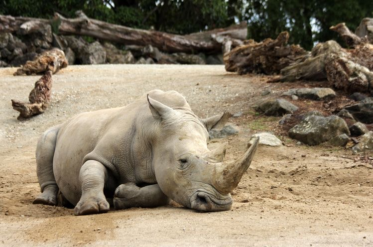

Biodiversity Loss
Definition.
The definition of Biodiversity loss is simply the extinction of species (plant or animal) worldwide, and also the local reduction or loss of species in certain habitat. It can be temporary or permanent, depending on whether the environmental degradation that leads to the loss is reversible through ecological restoration or effectively permanent.